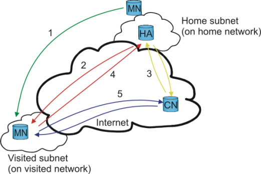

This document describes the software and procedures to set up and use mobile IPv6 for Linux. The "Mobility Support in IPv6" draft answers the what and why of mobile IP:
"Each mobile node is always identified by its home address, regardless of its current point of attachment to the Internet. While situated away from its home, a mobile node is also associated with a care-of address, which provides information about the mobile node's current location. IPv6 packets addressed to a mobile node's home address are transparently routed to its care-of address via the mobile nodes Home Agent (HA). The protocol enables IPv6 nodes to cache the binding of a mobile node's home address with its care-of address, and then to send any packets destined for the mobile node directly to it at this care-of address." --- draft-ietf-mipv6-24, page 1-2.
"Without specific support for mobility in IPv6, packets destined to a mobile node (host or router) would not be able to reach it while the mobile node is away from its home link (the link on which its home IPv6 subnet prefix is in use), since routing is based on the subnet prefix in a packet's destination IP address. In order to continue communication in spite of its movement, a mobile node could change its IP address each time it moves to a new link, but the mobile node would then not be able to maintain transport and higher-layer connections when it changes location. Mobility support in IPv6 is particularly important, as mobile computers are likely to account for a majority or at least a substantial fraction of the population of the Internet during the lifetime of IPv6." --- draft-ietf-mipv6-24, page 6.
For all the details, read the "Mobility Support in IPv6" draft

Mobile IP
The Mobile Node (MN) travels to a foreign network and gets a new care-of-address.
The MN performs a binding update to its Home Agent (HA) (the new care-of-address gets registered at HA). HA sends a binding acknowledgement to MN.
A Correspondent Node (CN) wants to contact the MN. The HA intercepts packets destined to the MN.
The HA then tunnels all packets to the MN from the CN using MN's care-of-address.
When the MN answers the CN, it may use its current care-of-address (and perform a binding to the CN) and communicate with the CN directly (optimized routing) or it can tunnel all its packets through the HA.
See figure "Mobile IP" for an explanation.